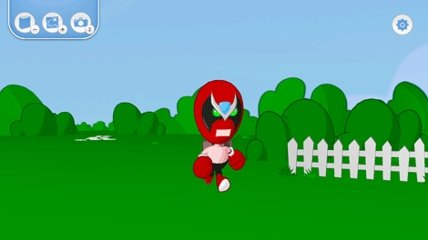
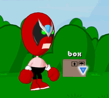

10 |
Explorer le monde |
 |
Se promener est facile. Visez juste une zone au sol où vous voulez que Strong Bad aille et appuyez sur 
Vous pouvez explorer le monde de Strong Bad en interagissant avec les objets et les gens. Quand votre Pointeur est dans une zone d'interaction, le petit point blanc devient un triangle bleu. Quand ça arrive, appuyez sur |
 |
 |
 |